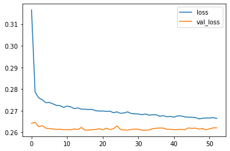

Predicting Loan Payback
When lending money, we surely would like to know if the borrower is plausible to pay us back. In our data, almost 20 percent of the loans get charged off, making this question highly relevant. Using machine learning, we could feed in the characteristics of the potential borrower and the requested loan into a model, and get a first assessment of the loan pay back of that specific person.

Most of the clients in our data do fully pay off their loans: around 20 percent of them got charged off.
By using data from All Lending Club, provided on Kaggle, I try out a Random Forest (RC) algorithm and an Artificial Neural Network (ANN) to build such a prediction model. LendingClub is the world's biggest peer-to-peer lending platform, headquartered in California, The US.
The models include several characteristics of some borrowers and their loan, and whether they paid back or not. The characteristics include for example the person’s grades in school, where they live (zip-codes), and if they own or rent their apartment. Also, we got data on characteristics of the loan, such as purpose, amount, interest rate, and installments.
Results
The models perform fairly equally. Below you see the predictions from the test dataset. Where the ANN model predicts a client to get charged off, it seems like it is wrong a bit more frequently. However, it is pretty hard to see any clear differences.


Which model is the best depends on our view on risk when lending money. For risk averse, predicting fully paid when the true value really is charged off, is a serious mistake. On the other hand, predicting a charge off when the true value really is fully paid isn’t as bad. Here, the ANN model seems to be preferable, However, some lenders might be more prone to risk, since it might improve the returns. Then, the risk of lost opportunities might be the most troubling. In that case, perhaps we should use the RF model to guide our decisions instead.


Out of all clients the RC model predicted would be charged off, 97 percent actually were. The ANN model performed slightly worse with 91 percent. So it actually seems like using the ANN model could have the consequence of some lost lending opportunities.
We can also look at it the other way around. Out of all the clients that actually got charged off, the RC model predicted charge off for 45 percent of them. The ANN model performed a bit better with 48 percent. Again, this shows that the ANN model could be preferable for the risk averse.
According to the F1 score, the ANN model performs better.
Actually, our data is imbalanced, since we got a lot fewer charged offs than fully paid loans. When this is the case, the best metric for evaluation is the F1 score. The closer the metric is to one, the better the model performs. On our case, the F1 score is the same for Fully paid, and higher for Charge offs in the ANN model. Thus, according to the F1 score, the ANN model performs better.
Data Processing
Below you see all variables available to us. A few of them are not included in the final models for various reasons. The month at which the loan is funded is information that we will not have when considering lending money to a potential client. Therefore, including it would introduce data leakage to our model. The other variables that are excluded are excluded due to missing values, or that it would become too complicated to include them in the models.

Missing values
Employment title, employment length, revolving line utilization rate, and number of mortgage accounts got some missing data. Utilization rate and number of bankruptcies only have few missing values; combined less than 0.5% of the data. These observations are dropped.

Employment title has almost 6 percent missing values. The variable consists of more than 170 000 unique job titles, which is too many to simply include in our model. We could try to classify the job titles into broader categories, but that would be too time consuming for us. It would also need a lot of domain knowledge to be able to correctly classify all those titles. Therefore, the variable is just dropped.

Employment length has a lot more missing values, and we would lose too much information by dropping them. However this variable does not vary that much over loan status. This is illustrated to the right. The variable does not have that much predictive power for loan status. Thus, this variable is dropped as well.
Mortgage accounts are missing almost 10 percent of the data. Also, the share of charged off loans varies considerably for different numbers of mortage accounts. This means that this variable does have some predictive power on loan status. In order to keep the variable, we could drop the missing observations. However it is a bad idea to drop as much as 10 percent of our data. Therefore, we are going to try a simple imputation method instead. We will impute the missing values based on some other variable that linearly correlates with mortage accounts.

It seems like total accounts correlate most strongly with mortage accounts. This makes sense, since mortage accounts should be a component of a client's total accounts. Therefore, the missing values of mortage accounts are imputed with the average number of mortage accounts for different numbers of total accounts.
Some Descriptive Statistics
Below, you see graphs on the percent of loans that got charged off over a few of the included variables. Since the percent charge offs vary over different values of the variables, these variables are all probably improving a prediction model by being included.
Among customers who rent their home, more than 20 percent of the loans got charged off. The category other includes “any”, “none” and “other”. This category consists of only a very small part of the data; not even one percent.

Around 30 percent of the loans for small business got charged off in our data, while that happened only for around 12 percent of the wedding loans. About 20 percent of loans for dept consolidation got charged off, which is rather high. Especially considering this loan purpose consists of 60 percent of all loans. The second largest group is loans for credit cards, which constitutes of 20 percent of the data.
The loan grade is assigned by Lending Club, and although we don’t really know what they base the grade on, the variable seems to be useful. The clients with grades A rarely get their loans charged off, while as much as half of the G grades do so. Also, it seems there is considerable variation in charge offs over different loan application types.

Below, you see a scatter plot over Interest rate and the number of total accounts, as well as the distribution of the amount of the requested loan. Here, it becomes visible that the higher the interest rate, the more loans tend to get charged off. The pattern for total accounts is a bit more unclear. Moreover, the distribution over loan amount shows that the amount of most loans is around 10 000 dollars. However, the higher the loan, the higher share seems to get charged off.


Method
In order to not overfit the data, we use only 30 percent of the sample for training. The remaining 70 percent is used to evaluate the model.
The RC model is set to build 500 decision trees. In general, a higher number of trees increases the performance and makes the predictions more stable.
My ANN model is a five layer perceptron model with dense layers and backpropagation. In order to further avoid overfitting, I use dropout layers, where a share of a layer’s neurons are randomly turned off for each propagation.
In this ANN model, I use a binary cross-entropy loss function. A loss function quantifies how good or bad the model is at classifying the inputs. The smaller the loss, the better a job the classifier does at modeling the relationship. However, there is a point where we will overfit our model. Therefore, we need to keep track of our validation loss, rather than the training loss. The validation loss is computed off the testing data, while the training loss is computed off the training data. Below, you find these plotted over the epochs of the model. I used a higher number of epochs, but due to early stopping, the algorithm stopped training around the 50th epoch.
Standardizing the inputs is not strictly necessary using this kind of ANN model, but it can make training faster and reduce the chances of getting stuck in local optima. Therefore, I do standardization of the inputs. The scaler is fit on the training data, and then used to transform the training as well as the testing data. For simplicity, I use the scaled data for the RC model as well, although it is not strictly necessary for this model either. Because of this, if the trained models are fed with any new data, that data must firstly be standardized.